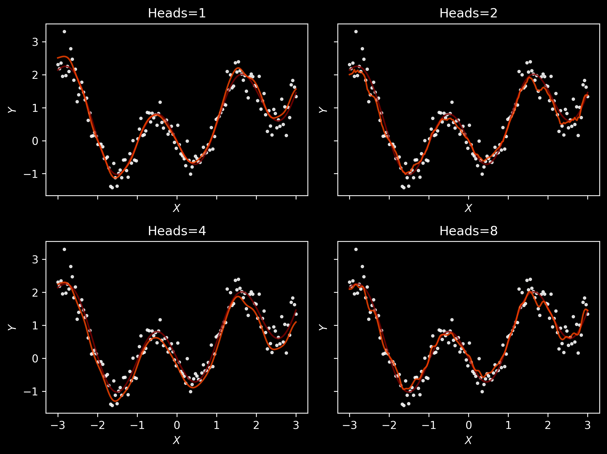

I remember that when we read Attention is all you need at a journal club back in 2020, I did not really understand what attention was1.
Fortunately for me, Transformer dissection paper and Cosma Shalizi’s post on the topic appeared, which show the connection between attention and kernel regression. This point of view was exactly what I needed! I like this so much that when I explain attention to other people, I always start from kernel regression.
Kernel regression
Let’s start with kernel regression as independently proposed by Nadaraya and Watson sixty years ago. We will generate some data with heteroskedastic noise, \(y = f(x) + n(x)\epsilon\) where \(\epsilon \sim \mathcal N(0, 1)\), \(f(x)\) is the expected value \(\mathbb E[y\mid x]\) and function \(n(x)\) makes the noise heteroskedastic.
We’ll plot the observed data points as well as \(f(x) + 2 n(x)\) and \(f(x) - 2n(x)\) as is often done.
An NVIDIA GPU may be present on this machine, but a CUDA-enabled jaxlib is not installed. Falling back to cpu.
Text(0, 0.5, '$Y$')
We will be interested in finding \(f(x)\) via the weighted average: \[
\hat f(x) = \sum_{i=1}^n y_i\, w_i(x)
\]
where \(w_i(x)\) is the weight of the \(i\)-th data point used to estimate the value at \(x\). To make it a weighted average, we will ensure that \(w_1(x) + \cdots + w_n(x) = 1\). In case where \(w_i(x) = 1/n\) we obtain just constant prediction, equal to the sample average over \(y_i\).
More generally, consider a positive function \(K\colon \mathcal X \times \mathcal X \to \mathbb R^+\) which measures similarity between two data points: we want \(K(x, x')\) to attain the largest possible value and for \(x'\) very far from \(x\) we want to have \(K(x, x')\) to be small. For such a function we can form a set of weights via \[
w_i(x) = \frac{K(x, x_i)}{\sum_{j=1}^n K(x, x_j)}.
\]
Let’s restrict our attention for now to Gaussian kernels, \(K(x, x'; \ell) = \exp \left(\left( \frac{x-x'}{\ell} \right)^2 \right)\) with lengthscale \(\ell\) and visualise the predictions for different lengthscales. As kernels are parameterised functions, we will use Equinox:
It seems that \(\ell=3.0\) results in underfitted, almost constant, predictions, and \(\ell=0.05\) arguably overfits, resulting in predictions changing a bit too quickly. Generally, it seems that \(\ell \approx 0.25\) is a reasonable choice.
Masked training
Let’s now think how we could find \(\ell\) algorithmically (and when the true mean curve is not available for comparison!).
For example, we could use something like the leave-one-out cross-validation:
Hold out a data point \((x_i, y_i)\);
Fit the kernel regression with lengthscale \(\ell\) to the data \((x_1, y_1), \dotsc, (x_{i-1}, y_{i-1}), (x_{i+1}, y_{i+1}), \dotsc, (x_n, y_n)\);
Predict \(y_i\) from \(x_i\) given the kernel regression.
Looking at different values \(\ell\) and varying the index \(i\) of the hold-out data point may be a reasonable training procedure. Note however that if we use standard squared loss, this will have a drawback that points which are further from the mean (due to heteroskedasticity) will be treated similarly to the data points where the noise is small. We could try to reweight them, but we won’t do that and implement a vanilla variant.
In fact, we will try several variants of this approach, allowing to hold out more data points than \(1\). In terms of probabilistic interpretation this is even worse: apart from problems with interpreting square loss due to heteroskedasticity, now we are also predicting values at several locations at once, effectively assuming that they are independent, given the observed data. In a way, this is similar to the BERT training. XLNet considers different permutations, being closer to an orderless autoregressive model. Anyway, BERT had impressive performance, so let’s try different variants here:
At this point we’ll introduce yet another modification; later we’ll see that it’s analogous to multi-head attention. Consider a model with \(H\) “heads”. Each head will be a kernel with a potentially different lengthscale \(\ell_h\). In this manner, we will allow different heads to capture information at a different lengthscale. Finally, we will combine the predictions using auxiliary parameters \(u_1, \dotsc, u_H\): \[
\hat f(x) = \sum_{h=1}^H u_h\, \hat f_h(x) = \sum_{h=1}^H u_h\, \sum_{i=1}^n y_i \frac{ K(x, x_i; \ell_h) }{ \sum_{j=1}^n K(x, x_j; \ell_h) }.
\]
Let’s implement it quickly in Equinox:
Code
class MultiheadGaussianKernel(eqx.Module): kernels: list[GaussianKernel] weights: jax.Arraydef__init__(self, n_heads: int) ->None:assert n_heads >0self.weights = jnp.full(shape=(n_heads,), fill_value=1/ n_heads)self.kernels = [ GaussianKernel(lengthscale=l)for l in jnp.linspace(0.1, 3, n_heads) ]@propertydef lengthscale(self) ->list[float]:return [k.lengthscale for k inself.kernels]def predict(self, X_test: Float[Array, " n_test"], X_obs: Vector, Y_obs: Vector) -> Float[Array, " n_test"]:# Shape (kernels, n_test) preds = jnp.stack([k.predict(X_test=X_test, X_obs=X_obs, Y_obs=Y_obs) for k inself.kernels])return jnp.einsum("kn,k->n", preds, self.weights)fig, axs = plt.subplots(2, 2, figsize=(2*4, 2*3), dpi=150, sharex=True, sharey=True)for n_heads, ax inzip([1, 2, 4, 8], axs.ravel()): key, subkey = random.split(key) model = train( key=subkey, model=MultiheadGaussianKernel(n_heads=n_heads), X=X, Y=Y, print_every=None, hold_out_size=1, n_steps=1_000, ) pred = model.predict(X_ax, X_obs=X, Y_obs=Y) ax.set_title(f"Heads={n_heads}") # $\ell$={model.lengthscale:.2f}") ax.plot(X_ax, f(X_ax), color="maroon", alpha=0.8) ax.plot(X_ax, pred, color="orangered", alpha=0.8) ax.scatter(X, Y, color="white", s=5, alpha=0.8) ax.set_xlabel("$X$") ax.set_ylabel("$Y$") u_h_str =", ".join([f"{w:.2f}"for w in model.weights]) l_h_str =", ".join([f"{k.lengthscale:.2f}"for k in model.kernels])print(f"Number of heads: {n_heads}")print(f" Combination: {u_h_str}")print(f" Lengthscales: {l_h_str}")fig.tight_layout()
Number of heads: 1
Combination: 1.09
Lengthscales: 0.16
Number of heads: 2
Combination: 0.99, -0.10
Lengthscales: 0.08, 0.02
Number of heads: 4
Combination: 1.09, -0.36, -0.24, 0.10
Lengthscales: 0.16, 2.95, 2.18, 11.60
Number of heads: 8
Combination: 0.90, 0.02, 0.86, 0.95, -0.45, -0.53, -0.51, -0.22
Lengthscales: 0.08, 9.49, 20.43, 25.16, 210.44, 33.52, 34.75, 82.24

We see that coefficients \(u_h\) are not constrained to be positive and they do not have to sum up to 1: we allow an arbitrary linear combination of predictions, rather than a weighted sum. Note also that many heads allow for larger flexibility, although on such a small data set this can arguably result in some amount of overfitting.
Attention
Recall the equation \[
\hat f(x) = \sum_{i=1}^n y_i\, \frac{K(x, x_i; \theta)}{ \sum_{j=1}^n K(x, x_j; \theta)},
\] where there kernel \(K\) is now parameterised by \(\theta\). As we want the kernel to give positive values, let’s write \[
K(x, x'; \theta) = \exp s_\theta(x, x')
\] for some function \(s_\theta\). Hence, we can write \[
\hat f(x) = \sum_{i=1}^n y_i \, \mathrm{softmax}( s_\theta(x, x_j)_{j = 1, \dotsc, n} ).
\] The usual approach is to use \(\theta = (W^{(q)}, W^{(k)})\) for matrices mapping from \(\mathcal X\) to some space \(\mathbb R^{d_\text{qk}}\) and use a scalar product \[
s_\theta(x, x') = \frac{\left\langle W^{(q)}x, W^{(k)}x'\right\rangle}{\sqrt{d_\text{qk}}} = \frac{ x^T \left(W^{(q)}\right)^T W^{(k)}x'}{\sqrt{d_\text{qk}}},
\] where the denominator takes various forms and is usually used to ensure that the values are properly normalized and the gradients can propagate through the softmax layer well.
Now consider another modification. We will write \(y_i = W^{(v)}x_i\) for some matrix \(W^{(v)}\) mapping from \(\mathcal X\) to some space \(\mathbb R^{d_\text{v}}\). (One can think that it’s a restriction when it comes to the regression (as we are not using values \(y_i\) as provided), but it’s not really a big issue: it just suffices to relabel as “point \(x_i\)” a tuple \((x_i, y_i)\) and redefine the introduced parameter matrices, so that they first project on the required component.)
In this case, we obtain a function \[
x\mapsto \sum_{i=1}^n W^{(v)}x_i \, \mathrm{softmax}\left( \frac{ x^T \left(W^{(q)}\right)^T W^{(k)}x_i}{\sqrt{d_\text{qk}}} \right).
\]
If we apply this formula to each \(x\) from the sequence \((x_1, \dotsc, x_n) \in \mathcal X^n\), we obtain a new sequence \((x_1', \dotsc, x'_n) \in \left(\mathbb R^{d_\text{v}}\right)^n\). This is exactly the self-attention layer used in transformers. How to obtain multi-head attention? Similarly as in multi-head kernel regression, we will introduce \(H\) different “heads” with individual parameters \(W^{(k)}_h, W^{(q)}_h, W^{(v)}_h\). Hence, for each data point \(x\) in the original sequence, we have \(H\) vectors in \(\mathbb R^{d_\text{v}}\) given by \[
x\mapsto \sum_{i=1}^n W^{(v)}_hx_i \, \mathrm{softmax}\left( \frac{ x^T \left(W^{(q)}_h\right)^T W^{(k)}_h x_i}{\sqrt{d_\text{qk}}} \right) \in \mathbb R^{d_\text{v}}.
\]
If we want to obtain a mapping into some vector space \(\mathcal Y\), we can now introduce matrices \(U_h\colon \mathbb R^{d_\text{v}}\to \mathcal Y\), so that in the end we have \[
x\mapsto \sum_{h=1}^H U_h \sum_{i=1}^n W^{(v)}_hx_i \, \mathrm{softmax}\left( \frac{ x^T \left(W^{(q)}_h\right)^T W^{(k)}_h x_i}{\sqrt{d_\text{qk}}} \right) \in \mathcal Y.
\]
To summarize, multi-head attention maps a sequence \((x_1, \dotsc, x_n)\in \mathcal X^n\) to a sequence in \(\mathcal Y^n\) and is parameterised by \(H\) tuples of matrices \((W^{(q)}_h, W^{(k)}_h, W^{(v)}_h, U_h)\), where index \(h\) corresponds to the attention head.
The authors had to explain self-attention, its multi-head variant, the transformer architecture with encoder and decoder block, and positional encoding. All in a short conference paper, so it may indeed appear quite dense in ideas.↩︎